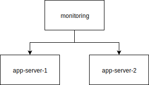

Monitoring with Prometheus
One of the common causes for service degradation or interruption is still the failure or exhaustion of your basic infrastructure resources. This post gives you an intro how you can monitor your basic resources with Prometheus. It shows the setup with Ansible and the data visualization with Grafana. The post does not show all the capabilities of Prometheus. In fact, I’m showing you only the simplest configuration. The benefit of this post is, that it takes you from start to finish and gives you a playground you can easily recreate when things go wrong, thanks to Vagrant and VirtualBox. Beware, as this is a non-trivial (non-hello-world) example, this post is really long.
| Date | Change description |
|---|---|
| 2017-10-27 | The first release |
TL;DR
The short version of actions you have to do is:
download the archive and extract the
project source filesensure you have installed: Vagrant, VirtualBox and Ansible
execute these steps in the console:
1 2 3 4 5
$ vagrant up # create the servers $ ansible-playbook -i hosts.ini playbook.yml # establish monitoring $ vagrant ssh app-server-1 # log into VM vagrant@app-server-1:~$ sudo su - # become root user root@app-server-1:~# python eat_cpu.py & # start demo application
Open your browser at http://192.168.100.10:3000/ and see the impact of the demo application code. That’s it. The next sections describe the steps in more detail.
Use Case
One of the worst calls you can get as operator, is one from the user who complains that the service is slow or – even worse – doesn’t respond anymore. A user should never know before you, that your service doesn’t behave in its parameters anymore.
Monitoring is a way of collecting and storing data (so called metrics) so that you can extrapolate a trend out of the historic view, to give you insights if preemptive actions are necessary to keep your promised Service Level Agreements (SLAs).
This post will focus on the monitoring aspect of the resources your service can consume. Specifically, I’ll go into details of monitoring:
- CPU
- memory
- disk space
For example, if you don’t use logrotation, it’s easy to consume all disk space and become unserviceable (see my older post Basics about Logrotate). A bug in the thread handling can also exhaust your CPU cycles. And a good old memory leak is never out of fashion.
I cannot stress enough that having historic data is very valuable (if not to say, essential). A single point in time observation is not enough. A specialized type of data store, called time series database, is needed.
The show case here will use a demo setup, which is explained below.
Setup Overview
Our end result will look like this:
{kind=link}
- We will have 3 servers:
- one monitoring server
- two application server (observed by the monitoring node)
We will deploy small applications which consume different types of resources onto the application servers. This will demonstrate the influence on the collected metrics, which are stored on the monitoring server within Prometheus.
You need several code files to repeat the actions in this post.
Use the full list of files below (or
the compressed archive):
eat_cpu.py(download)Demo application code to consume CPU cycles.eat_memory.py(download)Demo application code to consume RAM.eat_disk.py(download)Demo application code to consume disk space.Vagrantfile(download)Virtual environment description file (depends on VirtualBox)prometheus.yml(download)Prometheus configuration file.grafana.ini(download)Grafana configuration file.infra-node-metrics.json(download)Grafana dashboard to visualize resource consumption.hosts.ini(download)Ansible target hosts file to operate on.playbook.yml(download)Ansible playbook to set up our environment.
I will describe the files more in detail when I use them later. If you’re less interested in the details and want to see the end result first, you can jump to section Monitor the metrics and come back to the details later.
Server Provisioning
To create the servers described before, I’ll utilize Vagrant with VirtualBox as hypervisor. I use the term provisioning in the sense of creating the servers and configuring the basic infra support functions (which includes the monitoring). The configuration is done with Ansible. As described before there are multiple files involved in this operation and they get explained piece by piece below.
Feedback needed
Unfortunately, I haven’t yet found crisp, unambiguous terms for the different phases, and provisioning and deploying is overloaded and therefore ambiguous. If you have found good terms and definitions, I’d be happy if you could leave me a comment on this post.
Vagrant
Let’s start with the Vagrantfile. This file is the input for Vagrant
and describes the basic structure of our environment. Typically, I have
three parts in a Vagrantfile:
- an array which describes the servers and their attributes
- some general hypervisor settings
- the logic to create the servers from the array
Lets take a look at the first part:
1 2 3 4 5 6 7 8 9 10 11 12 13 14 15 16 17 18 19 20 21 22 23 24 25 26 27 28 29 30 31 32 33 34 | # -*- mode: ruby -*-
# vi: set ft=ruby :
Vagrant.configure(2) do |config|
# =========================================================================
# The servers in our environment
# =========================================================================
servers=[
{
:hostname => "monitoring",
:box => "geerlingguy/ubuntu1604",
:ip => "192.168.100.10",
:port => 50001,
:ram => 1024,
:cpu => 1
},
{
:hostname => "app-server-1",
:box => "geerlingguy/ubuntu1604",
:ip => "192.168.100.11",
:port => 50002,
:ram => 1024,
:cpu => 1
},
{
:hostname => "app-server-2",
:box => "geerlingguy/ubuntu1604",
:ip => "192.168.100.12",
:port => 50003,
:ram => 1024,
:cpu => 1
}
]
|
You’ll notice that the three servers we mentioned in the previous section
get described here. I like the Vagrant Box from geerlingguy, as it
works better as the official one from Canonical. I use predefined private
IPs (and not DNS), as I feed these IPs later to Ansible. Sometimes I had issues
with host port clashes when working with multiple Vagrant environments at the
same time, so I usually predefine them as well. From time to time, I need
different amount of resources for a multi VM environment, so I added attributes
for CPUs and memory to my template as well.
The second part is this:
36 37 38 39 40 41 42 | # =========================================================================
# The general settings
# =========================================================================
config.vm.provider "virtualbox" do |v|
# https://www.vagrantup.com/docs/virtualbox/configuration.html#linked-clones
v.linked_clone = true
end
|
I use a hypervisor specific feature from VirtualBox to speed things up a little. When you destroy and create such an environment multiple times, this comes in handy.
And the third part is this:
44 45 46 47 48 49 50 51 52 53 54 55 56 57 58 59 60 | # =========================================================================
# Server specific settings
# =========================================================================
servers.each do |machine|
config.vm.define machine[:hostname] do |node|
node.vm.box = machine[:box]
node.vm.hostname = machine[:hostname]
node.vm.network "private_network", ip: machine[:ip]
node.vm.network "forwarded_port", guest: 22, host: machine[:port], id: "ssh"
node.vm.provider "virtualbox" do |vb|
vb.memory = machine[:ram]
vb.cpus = machine[:cpu]
end
end
end
end
|
This iterates through the servers defined in the first part and applies all the attributes we defined.
With this file locally in place, you can influence the life cycle of your
servers with vagrant up and vagrant destroy. To continue with
this post, start the servers with:
1 | $ vagrant up # create the servers
|
Now we are ready to deploy something onto those servers.
Ansible hosts
I’m going to use more and more Ansible examples in this blog, as this is my tool of choice for such tasks. Doing such things with the shell looks smaller and easier at first, but the more nodes you have, the more Ansible comes in handy. If you haven’t tried it yet, give it a chance, it’s awesome.
Ansible needs a file which specifies its targets to operate on. It uses the
ini syntax and you can name it whatever you want, I called it
hosts.ini throughout this post. The content is:
1 2 3 4 5 6 | [infra-servers]
monitoring ansible_host=192.168.100.10 ansible_user=vagrant ansible_ssh_pass=vagrant
[application-servers]
app-server-1 ansible_host=192.168.100.11 ansible_user=vagrant ansible_ssh_pass=vagrant
app-server-2 ansible_host=192.168.100.12 ansible_user=vagrant ansible_ssh_pass=vagrant
|
Warning
Do not store passwords like that when using Ansible. Use the Ansible Vault feature [1] for that. I excluded it from the scope of this post to keep it a bit more crisp.
You’ll recognize the servers we described in the Vagrantfile before.
If you don’t provide the ansible_host key-value-pair, a DNS name
resolution will be attempted.
As Ansible is agentless and uses plain SSH to access the targets, I used
the default credentials Vagrant creates when starting the servers. The servers
got separated into groups (or *.ini file sections). You can have groups of
groups too, which is is a powerful concept. These groups come in handy when
applying deployment logic based on these groups. The next section will
show that.
Ansible playbook
Ansible uses playbooks to encapsulate deployment and server configuration logic. One playbook can contain 1 to N plays. One play uses a group of servers or a single server as a target. One play contains 1 to N tasks. A task is the atomic building block and smallest unit of work in Ansible.
There is one magic group called all. This
includes all the servers in the target file we specified before. The syntax
in playbooks is YAML and the file we use is the playbook.yml. I used
one playbook to contain all necessary plays to keep it simple. Let’s go through
the plays piece by piece. I’ll show the code first and explain it below:
1 2 3 4 5 6 7 8 9 10 11 12 13 14 15 16 17 18 19 20 21 22 23 24 25 26 27 28 29 30 31 32 33 34 35 | ---
# ===========================================================================
# Do basic setup on all hosts
# ===========================================================================
- hosts: all
become: true
gather_facts: false
tasks:
- name: "Wait for SSH to be ready."
become: false
delegate_to: localhost
wait_for:
port: 22
host: '{{ ansible_host }}'
search_regex: "OpenSSH"
delay: 5
timeout: 300
- name: "Add our servers to the hosts file."
lineinfile:
dest: /etc/hosts
# use the IP address we specified in the Vagrantfile
line: '{{ hostvars[item].ansible_host }} {{item}}'
with_items: '{{ groups["all"] }}'
- name: "Ping each other via DNS names."
ping:
with_items: '{{ groups["all"] }}'
- name: "Ensure system package cache is updated."
apt:
update_cache: "yes"
cache_valid_time: 3600
|
This is the first play and we use the magic group all as a target.
As described before, that includes all servers. From reading the name
lines, you should get an idea what happens. You also see that I re-use
existing Ansible modules, namely wait_for, lineinfile, ping and
apt. I won’t go into the details of the modules I used.
A full list of modules is available at [2], take a look at them
for the details. The goal of this play is to have the servers ready
for deploying the monitoring and applications later.
Keep in mind that everything here happens inside the servers (if not delegated, like I did here to wait for SSH). When working with virtual machines which got created a few seconds earlier, sometimes the SSH service is not fully ready when starting the playbooks, that’s why I added a waiting logic. Prometheus will later use DNS name resolution, that’s why I manipulated the hosts file on these servers.
38 39 40 41 42 43 44 45 46 47 48 49 50 51 52 53 54 55 56 57 58 59 | # ===========================================================================
# Do setup on all hosts we want to monitor
# ===========================================================================
- hosts: all # we want the metrics of the monitoring server too
become: true
tasks:
- name: "Install Prometheus Node Exporter package."
apt:
name: prometheus-node-exporter
- name: "Ensure the Node Exporter is started and starts at host boot."
service:
name: prometheus-node-exporter
enabled: true
state: started
- name: "Check if the service emits metrics."
uri:
url: http://127.0.0.1:9100/metrics
method: GET
status_code: 200
|
After we have prepared the servers with the basic steps, we install the operating system packaged version of one of many Prometheus exporters [3], the Prometheus-Node-Exporter. This exporter emits the metrics we are interested in. The Prometheus service will later collect the metrics from this URI.
I like to add small “assert tasks” which check conditions I expect to be there, to fail fast if things go wrong. Here I do a simple HTTP GET request to see if the exporter emits metrics.
Now that we have something to listen on, let’s install the rest of the monitoring.
62 63 64 65 66 67 68 69 70 71 72 73 74 75 76 77 78 79 80 81 82 83 84 85 86 87 88 89 90 91 92 93 94 95 96 97 98 99 100 101 102 103 104 105 106 107 108 109 110 111 112 113 114 115 116 117 118 119 120 121 122 123 124 125 126 127 128 129 130 131 132 133 134 135 136 137 138 139 140 141 142 143 144 145 146 147 148 149 150 151 152 153 154 155 156 157 158 159 160 161 162 163 164 165 | # ===========================================================================
# Do prometheus server specific setup only on the monitoring server
# ===========================================================================
- hosts: monitoring
become: true
tasks:
# --- Prometheus --------------------------------------------------------
- name: "Install the Prometheus server."
apt:
name: prometheus
- name: "Configure the Prometheus server."
copy:
src: prometheus.yml
dest: /etc/prometheus/prometheus.yml
notify: event_restart_prometheus
- name: "Ensure Prometheus is started and starts at host boot."
service:
name: prometheus
enabled: true
state: started
- name: "Check if Prometheus is accessible."
uri:
url: http://127.0.0.1:9090/graph
method: GET
status_code: 200
# --- Grafana -----------------------------------------------------------
- name: "Install the Grafana server."
apt:
name: grafana
- name: "Copy Grafana configuration file."
copy:
src: grafana.ini
dest: /etc/grafana/grafana.ini
notify: event_restart_grafana
- name: "Ensure Grafana is started and starts at host boot."
service:
name: grafana
enabled: true
state: started
- name: "Check if Grafana is accessible."
uri:
url: http://127.0.0.1:3000
method: GET
status_code: 200
- name: "Add Prometheus as datasource to Grafana."
vars:
prometheus_datasource:
name: "prometheus"
type: "prometheus"
url: "http://127.0.0.1:9090"
access: "proxy"
isDefault: true
basicAuth: false
uri:
url: http://127.0.0.1:3000/api/datasources
method: POST
body: "{{ prometheus_datasource | to_json }}"
body_format: json
user: admin
password: admin
force_basic_auth: yes
status_code: 200,500 # 500 means, the datasource is already added
headers:
Content-Type: "application/json"
Accept: "application/json"
- name: "Upload the example Grafana dashboard."
uri:
url: http://127.0.0.1:3000/api/dashboards/db
method: POST
body: "{{ lookup('file', 'infra-node-metrics.json') }}"
body_format: json
user: admin
password: admin
force_basic_auth: yes
status_code: 200
headers:
Content-Type: "application/json"
Accept: "application/json"
# --- After all tasks are executed (if notified) --------------------------
handlers:
- name: "Restart the Prometheus service."
service:
name: prometheus
state: restarted
listen: event_restart_prometheus
- name: "Restart the Grafana service."
service:
name: grafana
state: restarted
listen: event_restart_grafana
|
This is a big one. The important parts are highlighted. We apply this logic
only on the monitoring server. Three important files get used here:
prometheus.ymlconfigures Prometheusgrafana.iniconfigures Grafanainfra-node-metrics.jsonexample dashboard
If you want to have a reproducible infrastructure, it’s good to save such things in your version control system too. For the dashboard, I usually create one in the Grafana web UI and use the export function to store the generated JSON. Only for very small changes I edit the JSON file itself.
There are also again some tasks which assert that the services are up and
running. The handlers at the end get fired after the tasks are
finished and if a notification was triggered.
With this logic, we have the monitoring in place. But we need something to have impact on our resources. We need applications:
168 169 170 171 172 173 174 175 176 177 178 179 180 181 182 183 | # ===========================================================================
# Push the "applications" to the application servers
# ===========================================================================
- hosts: application-servers
become: true
gather_facts: false
tasks:
- name: "Copy the applications to the servers."
copy:
src: "{{ item }}"
dest: "/root/{{ item }}"
with_items:
- eat_cpu.py
- eat_disk.py
- eat_memory.py
|
A very simple and short one this time. The application code we copy here is shown in Appendix.
Now execute the playbook locally:
1 | $ ansible-playbook -i hosts.ini playbook.yml
|
While this command does its magic, let’s have a look at the configuration files we have copied to the monitoring node.
Tip
It’s perfectly fine to start Ansible playbooks like I did here. For example, when you transition from shell scripts. At some point in time you should very strongly consider to encapsulated logic into Ansible roles [4]. Think of them as re-usable libraries with defined interfaces.
Prometheus
You have seen in the playbook before, that we copy a file called
prometheus.yml. This is what it does:
1 2 3 4 5 6 7 8 9 10 11 12 13 14 15 16 17 18 19 20 21 22 23 24 25 26 27 28 29 | # The full config is at:
# https://prometheus.io/docs/operating/configuration/
global:
# How frequently to scrape targets by default.
scrape_interval: 15s
scrape_configs:
- job_name: 'monitoring'
target_groups:
- targets: ['localhost:9100']
labels:
name: 'monitoring'
owner: 'mzio'
- job_name: 'app-server-1'
target_groups:
- targets: ['app-server-1:9100']
labels:
name: 'app-server-1'
arch: 'x86'
- job_name: 'app-server-2'
target_groups:
- targets: ['app-server-2:9100']
labels:
name: 'app-server-2'
arch: 'x86'
|
Important
In newer versions of Prometheus, target_groups got replaced by
static_configs [5] .
This is a static configuration, which only makes sense if your environment does not change that often. There are more dynamic ones with service discovery, but I won’t dive into that right now. The highlighted lines are the interesting ones. The meaning of these lines piece by piece:
scrape_configs: The act of collecting (pulling) metrics from a source is called scraping in Prometheus terms. We can have N scrape configurations.job_name: A job abstracts 1 to N targets. For target specific resources (like in this post), this seems unnecessary. Imagine HTTP response times of your distributed, highly available application on the other hand. Then you don’t care about a single HTTP server, but in the combined metrics. A job name could then be “web-ui-app-x” with multiple targets. I plan to write a post aboutHAProxyat some point, it will make more sense then.targets: A scrape job can have multiple targets. We could have added both application servers here, but then both would get the same labels applied. The labels are one of the nice things of Prometheus which distinguishes it from other monitoring software like statsd.name: This is simply an arbitrarily chosen free-form label. Labels give you the ability to tag / mark / annotate your metrics. These values can later get used to set constraints in the Prometheus query language.
The best metrics don’t help, if you can’t pull knowledge out of them and derive actions from that knowledge. Visualizing data is the best method (for me) to create knowledge from data, and Grafana does a very good job at data visualization.
Grafana
This is the last file we discuss, before finally monitoring our environment and it’s a very simple one:
1 2 3 4 5 6 7 | # Full docs at http://docs.grafana.org/installation/configuration/
# We only keep the changes from the defaults here.
#################################### Anonymous Auth ##########################
[auth.anonymous]
enabled = true
org_role = Viewer
|
Important
One of the (not shown here and thereby default) values I use is the admin password. Take care of that when you use Grafana in a sensitive environment (see [6] for the full configuration).
The only thing I change from the defaults is, that I’d like to have reading access for people not logged into Grafana. You still need to be logged in to create, change or delete dashboards.
That’s the last part of the automation we use. Let’s check what we can do with that.
Monitor the metrics
After the playbook is executed, open the prometheus server UI at
http://192.168.100.10:9090/status. You should see that all the expected
targets are listed and in state UP like in this image:

At http://192.168.100.10:9090/graph you can start using the Prometheus
query language [7] to create graphs based on the metrics the
Prometheus server scrapes from the targets in an interval. For example,
you can query the available disk space from the nodes by using
node_filesystem_free{mountpoint='/', name!=''}:
node_filesystem_free: This is the metric you’re interested in{}: Constraints get defined in curly bracketsmountpoint='/': A constraint: only show metrics of the root directoryname!='': A constraint: only show metrics with a value for labelname
The constraints get logically AND‘ed. After setting that query in the web
UI, you should see this:

Note
The (old) version of Prometheus I used here adds itself
automatically (not sure if this is a bug or a feature) additionally
to the setting I did (with labels), so I ignore that entry with
the constraint name!='' like you see in the image.
You’ll notice very quickly that this gets ugly. For example, the metric is in bytes, and you cannot transform it to a human readable unit. Let’s use Grafana to visualize that in a sensible way.
The Ansible playbook also installed and configured the Grafana service, which is accessible at http://192.168.100.10:3000/.
Sign in with username admin and password admin, select the dashboard
“Infra Node Metrics” and you’ll see this:
{kind=link}
This is the dashboard created from the file infra-node-metrics.json.
As said earlier, I usually use the edit functionality in the web UI to
create and change the dashboards and then export it as JSON file.
You can watch that for a while if you want to, but there won’t be a lot
of action. We have to trigger something which consumes the resources
we monitor. That’s where the application files we copied onto the
application servers come into play.
These files (eat_cpu.py, eat_memory.py and
eat_disk.py) are listed fully in Appendix, I won’t describe
them in detail in this post.
Fire up one of the applications (inside one or both of the application servers) to consume some resources:
1 2 3 4 5 6 7 8 | [markus@home] $ vagrant ssh app-server-1
[...]
vagrant@app-server-1:~$ sudo su -
root@app-server-1:~#
root@app-server-1:~#
root@app-server-1:~# python eat_cpu.py &
[1] 2392
root@app-server-1:~# kill -9 2392 # if you're impatient :)
|
You’ll see the impact immediately in your dashboard:
{kind=link}
That’s it. It’s a good way to start like this and let the pattern recognition machine in your head do its magic for some time, and learn what’s “normal” and what’s an “anomaly”, before considering to introduce alerting, another corner stone of monitoring. I won’t cover alerting in this post, but be aware that this most probably will become necessary, as you don’t want to watch this the whole day. Visualizing data (like resource consumption here), is also a very good show case within your company, especially when you try to convince people who have only 1 minute (or less) on their hand for listening to you.
“Homework”:
With this environment at your hand, you can try yourself at the following tasks:
- destroy and create the environment 5 times in a row
- run the playbook at least 3 times
- run another one of the demo application files and watch the impact
- visualize a query which only shows the servers labeled with
arch: x86 - visualize a query which watches only the used swap in the servers
- visualize only the CPU steal time of the monitoring server
- add any other metric offered by the Prometheus node exporter to the dashboard
- <whatever-comes-to-your-mind>
Conclusion
This post showed how to monitor operating system metrics with Grafana, Prometheus and Prometheus Node Exporter. The deployment of the software happened with Ansible, after the server provisioning was done with Vagrant and VirtualBox. We deployed the necessary software by using the packaged versions from Ubuntu. Unfortunately, it got decided that Grafana won’t be in release 17.10 and newer [8]. This is a good chance to show in another post, how we can create Ansible Roles to encapsulate the logic of getting the newest Grafana source code, building it, and deploying it. This also enables us to to make use of the much nicer API [9] and UI.
Those node metrics aren’t the only metrics you can collect. There is a variety of different exporters [3] which help you to keep the overview. You can also instrument your own application to emit metrics. That’s something I will show in another post.
References
| [1] | http://docs.ansible.com/ansible/latest/playbooks_vault.html |
| [2] | http://docs.ansible.com/ansible/latest/list_of_all_modules.html |
| [3] | (1, 2) https://prometheus.io/docs/instrumenting/exporters/ |
| [4] | http://docs.ansible.com/ansible/latest/playbooks_reuse_roles.html |
| [5] | https://github.com/prometheus/prometheus/issues/1706 |
| [6] | http://docs.grafana.org/installation/configuration/ |
| [7] | https://prometheus.io/docs/querying/basics/ |
| [8] | https://answers.launchpad.net/ubuntu/+source/grafana/+question/658771 |
| [9] | http://docs.grafana.org/http_api/data_source/ |
Appendix
The application code we use to impact the resource consumption of our infrastructure is shown below. It’s basically nonsense and only for demo purposes, that’s why I don’t add an explanation to them.
eat_cpu.py:
1 2 3 4 5 6 7 8 9 10 11 12 | #!/usr/bin/python
# based on https://technobeans.com/2012/04/16/5-ways-of-fibonacci-in-python/
N = 50
def fibonacci(n):
if n in (1, 2):
return 1
return fibonacci(n - 1) + fibonacci(n - 2)
fibonacci(N)
|
eat_memory.py:
1 2 3 4 5 6 7 8 9 10 11 12 13 14 15 16 | #!/usr/bin/python
# based on https://stackoverflow.com/questions/6317818/how-to-eat-memory-using-python
import time
blanks = " "
try:
for i in range(50):
print(i)
blanks += " " * (50 * 1000 * 1000)
time.sleep(5)
except MemoryError:
print("We're going out of memory.")
time.sleep(10)
|
eat_disk.py:
1 2 3 4 5 6 7 8 9 10 11 12 | #!/usr/bin/python
import time
from subprocess import call
for i in range(30):
cmd = "dd if=/dev/zero of=big-file-%s count=1024 bs=1048576" % i
call(cmd.split(" "))
time.sleep(2)
# https://stackoverflow.com/questions/8816059/create-file-of-particular-size-in-python
# creates files of 1GB size but `df -h` doesn't recognize that (not sure why).
|